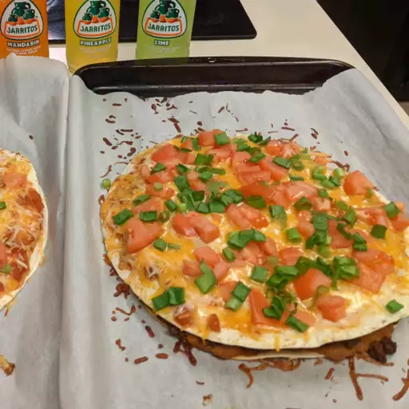

A delicious Pizza

A delicous mouth watering mexican pizza made my Mexican mom
Ingredients
- ½ pound ground beef
- 1 medium onion, diced
- 1 clove garlic, minced
- 1 tablespoon chili powder
- 1 teaspoon ground cumin
- ½ teaspoon paprika
- ½ teaspoon salt
- ½ teaspoon black pepper
- 1 (16 ounce) can refried beans
- 4 (10 inch) flour tortillas
- ½ cup salsa
- 1 cup shredded Cheddar cheese
- 1 cup shredded Monterey Jack cheese
- 2 green onions, chopped
- 2 tomatoes, diced
- ¼ cup thinly sliced jalapeño pepper
- ¼ cup sour cream (Optional)
Steps
- Cook the beef with onions and garlic, drain, and season.
- Place a tortilla on each pie plate and top with refried beans.
- Cover with the beef, top with another tortilla, and bake until the tortillas are crisp.
- Layer the toppings in this order: Salsa, cheeses, tomatoes, green onions, and jalapeño.
- Bake until the cheese is melted.
- Cool, then cut each pizza into four slices.